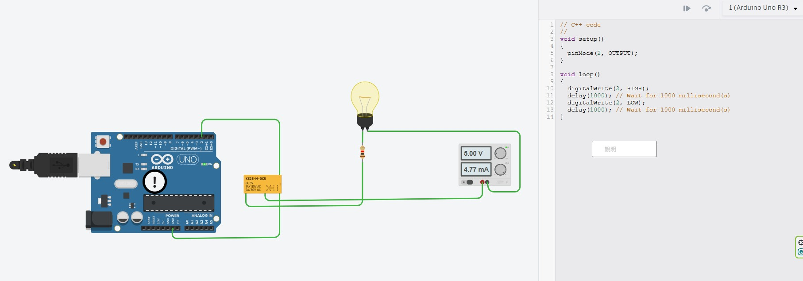

Tinkercad Circuits 異常診斷、電晶體驅動保護、非阻塞架構與 5 大物聯網智慧控制延伸實踐
在微控制器（MCU，如 Arduino、ESP32）的實務開發中，單晶片本體僅能處理 $3.3\text{V} \sim 5\text{V}$ 的弱電低功率數位訊號，而日常家電（AC 110V/220V 電燈、風扇）或工控致動器（DC 12V/24V 抽水馬達、電磁閥）則需要大電壓與大電流驅動。電磁繼電器（Electromechanical Relay, EMR） 是實現「以微弱數位訊號，安全隔離並切換大功率負載」最核心的電氣橋樑。

OUTPUT 輸出模式。KS2E-M-DC5，線圈額定 DC 5V，觸點切換容量 1A/125V AC 或 2A/30V DC）。電磁繼電器主要由低壓控制端（線圈）與高壓負載端（接點）構成，兩端在電氣上完全物理隔離：
正規工程設計絕不以 MCU 引腳直推線圈，而是使用 NPN 電晶體（如 2N2222、SS8050） 作為低側開關，並於線圈兩端反向並聯 續流二極體（Flyback Diode，如 1N4007、1N4148）：
| 電路單元 | 元件型號 | 核心功能與物理機制 | 關鍵參數計算 |
|---|---|---|---|
| 開關放大級 | NPN (2N2222 / SS8050) | 將微弱的 GPIO 信號（數 mA）放大為足以驅動線圈的電流（數十至數百 mA），工作於飽和導通區。 | $I_B \ge \frac{I_C}{\beta_{\text{sat}}}$，基極電阻取 $1\text{k}\Omega$，GPIO 僅需輸出 $4.3\text{mA}$。 |
| 續流保護級 | 二極體 (1N4007 / 1N4148) | 斷電瞬間提供電感電流循環迴路，將反向感應電壓鉗位在 $V_{\text{CC}} + 0.7\text{V}$，消除高壓電弧。 | 耐壓需高於電源電壓，最大正向瞬態電流需能承受線圈飽和電流。 |
| 光耦隔離級 | PC817 (光耦合器) | 利用紅外發光與光敏受光，實現控制端與功率驅動端完全的電氣接地隔離。 | 隔離耐壓達 $5000\text{V}_{\text{rms}}$，徹底防止負載端突波反灌 MCU 造成重置或當機。 |
在撰寫 Arduino 韌體之前，以流程圖直觀解說主迴圈時序切換與電氣動作邏輯：
/**
* @file arduino_relay_basic.ino
* @brief Arduino 數位控制繼電器基礎循環切換程式
* @note 透過 Pin 2 輸出高低電位，每隔 1 秒切換一次繼電器開關狀態
*/
// 定義繼電器控制引腳 (對應 Tinkercad 接線)
const int RELAY_PIN = 2;
// 定義切換間隔時間 (毫秒)
const unsigned long SWITCH_INTERVAL = 1000;
void setup() {
// 初始化序列埠通訊 (鮑率 9600)，用於監控除錯
Serial.begin(9600);
Serial.println(F("========================================"));
Serial.println(F("⚡ Arduino 數位控制繼電器系統啟動"));
Serial.println(F("========================================"));
// 設定 Pin 2 為數位輸出模式
pinMode(RELAY_PIN, OUTPUT);
// 初始狀態預設為關閉 (LOW)，確保開機時負載不誤動作
digitalWrite(RELAY_PIN, LOW);
Serial.println(F("狀態: 初始預設關閉 (Pin 2 = LOW)"));
}
void loop() {
// 1. 輸出高電位，驅動繼電器吸合 (若使用低電位觸發模組則相反)
digitalWrite(RELAY_PIN, HIGH);
Serial.println(F("[動作] 繼電器閉合 (HIGH) ──► 💡 負載燈泡點亮 (4.77 mA)"));
delay(SWITCH_INTERVAL); // 保持開燈狀態 1000 毫秒
// 2. 輸出低電位，釋放繼電器接點斷開
digitalWrite(RELAY_PIN, LOW);
Serial.println(F("[動作] 繼電器斷開 (LOW) ──► 🌑 負載燈泡熄滅"));
delay(SWITCH_INTERVAL); // 保持關燈狀態 1000 毫秒
}millis() 狀態機架構)在真實自動化系統中，使用 delay(1000) 會使 MCU 完全喪失即時響應能力。以下為符合工控標準的非阻塞時間排程架構：
/**
* @file arduino_relay_non_blocking.ino
* @brief 採用 millis() 的非阻塞式繼電器排程控制
*/
const int RELAY_PIN = 2;
const unsigned long INTERVAL = 1000; // 切換間隔 1 秒
unsigned long previousMillis = 0; // 記錄前一次狀態翻轉的時間戳
bool relayState = false; // 記錄當前繼電器狀態
void setup() {
Serial.begin(9600);
pinMode(RELAY_PIN, OUTPUT);
digitalWrite(RELAY_PIN, LOW);
Serial.println(F("⚡ 非阻塞繼電器排程器運作中..."));
}
void loop() {
unsigned long currentMillis = millis();
// 檢查是否達到切換時間閾值
if (currentMillis - previousMillis >= INTERVAL) {
previousMillis = currentMillis; // 更新時間基準
// 翻轉狀態並寫入引腳
relayState = !relayState;
digitalWrite(RELAY_PIN, relayState ? HIGH : LOW);
Serial.print(F("目前時間: "));
Serial.print(currentMillis);
Serial.print(F(" ms | 繼電器狀態: "));
Serial.println(relayState ? F("導通 (ON 💡)") : F("斷開 (OFF 🌑)"));
}
// 此處主迴圈無任何卡頓阻塞，可同時執行其他感測器採集或按鈕中斷！
}將此「**數位控制微功率 ➔ 大電流開關**」的基礎電路與感測器、通訊技術結合，可以衍生出多個實用且極具商業價值的自動化系統：
int lightVal = analogRead(A0); // 環境光度
int motionVal = digitalRead(7); // 人體動態
// 唯有環境昏暗且偵測到有人經過時才觸發開燈，人走後延遲 30 秒自動熄滅
if (motionVal == HIGH && lightVal < 400) {
digitalWrite(RELAY_PIN, HIGH);
lastMotionTime = millis();
}| 特性項目 | 機械電磁繼電器 (EMR, 本實驗所用) | 固態繼電器 (SSR, Solid State Relay) |
|---|---|---|
| 內部構造 | 電磁鐵吸引機械接觸金屬片導通 | 半導體元件（光耦 + 雙向可控矽 Triac 或 MOSFET） |
| 切換動作聲音 | 有清脆明亮的機械「喀噠」聲 | 完全靜音（無任何活動機械接點） |
| 開關反應速度 | 較慢（約 $5\text{ms} \sim 15\text{ms}$） | 極快（微秒級，支援低頻 PWM 調光調溫） |
| 接觸火花與壽命 | 斷開感性負載時接點易產生電弧，約數十萬次 | 無電弧火花，壽命極長（數千萬次以上） |
| 導通壓降與發熱 | 接觸電阻極低，導通時本體基本不發熱 | 存在管壓降（約 $1\text{V} \sim 1.5\text{V}$），大電流時需散熱片 |
模型/Agent: Gemini 3.8 Flash / Antigravity
Prompt 原文:
C:\Users\User\Desktop\20260924-1.jpg 這是我的第一個數位控制繼電器電路，幫我整理成筆記 arduino_relay，並延伸這個基本電路的應用想法變更摘要: 剖析使用者於 Tinkercad 設計的第一個 Arduino 繼電器控制電路，診斷微控制器出現警示驚嘆號（`!`）的根本原因（GPIO 輸出過電流與缺乏續流二極體產生反電動勢），詳解 NPN 電晶體驅動與光耦隔離標準電路，提供基礎阻塞與進階非阻塞完整程式碼，並展開 5 大實用延伸應用與交流強電安全規範。